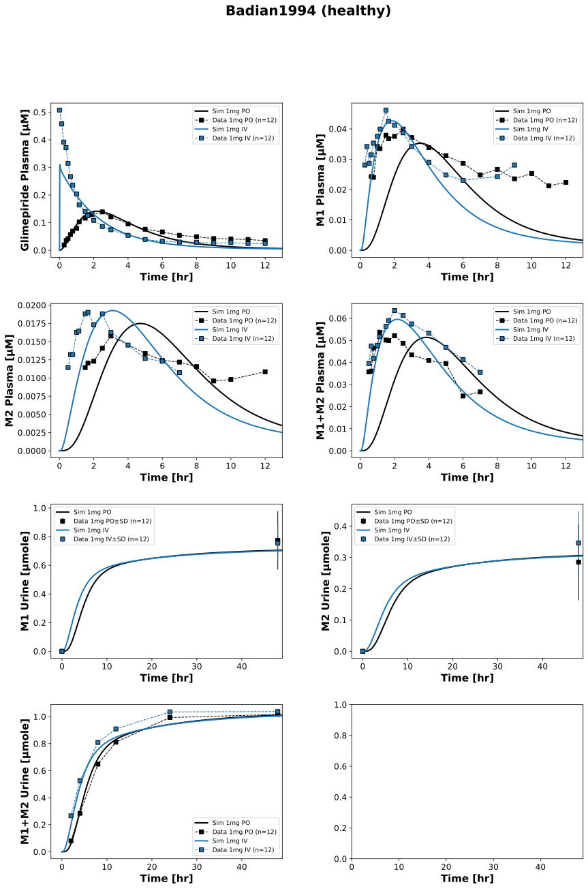

|  |
../../../../experiments/studies/badian1994.py
from typing import Dict
from sbmlsim.data import DataSet, load_pkdb_dataframe
from sbmlsim.fit import FitMapping, FitData
from pkdb_models.models.glimepiride.experiments.base_experiment import (
GlimepirideSimulationExperiment,
)
from pkdb_models.models.glimepiride.experiments.metadata import (
Tissue,
Route,
Dosing,
ApplicationForm,
Health,
Fasting,
GlimepirideMappingMetaData,
Coadministration,
)
from sbmlsim.plot import Axis, Figure
from sbmlsim.simulation import Timecourse, TimecourseSim
from pkdb_models.models.glimepiride.helpers import run_experiments
class Badian1994(GlimepirideSimulationExperiment):
"""Simulation experiment of Badian1994."""
bodyweight = 78.0 # [kg] mean weight 78kg (72-88)
info = {
"[Cve_gli]": "glimepiride",
"[Cve_m1]": "glimepiride-M1",
"[Cve_m2]": "glimepiride-M2",
"[Cve_m1_m2]": "M1+M2",
"Aurine_m1": "glimepiride_urine-M1",
"Aurine_m2": "glimepiride_urine-M2",
"Aurine_m1_m2": "glimepiride_urine-M1+M2",
}
routes = ["po", "iv"]
def datasets(self) -> Dict[str, DataSet]:
dsets = {}
# Mapping prefixes to corresponding molecular weights
conversion_map = {
"glimepiride_": self.Mr.gli,
"glimepiride-M1": self.Mr.m1,
"glimepiride-M2": self.Mr.m2,
"glimeperide_urine-M1_": self.Mr.m1,
"glimeperide_urine-M2_": self.Mr.m2,
"glimeperide_urine-M1+M2": self.Mr.m1_m2,
}
for fig_id in ["Fig1", "Fig2", "Tab2B"]:
df = load_pkdb_dataframe(f"{self.sid}_{fig_id}", data_path=self.data_path)
for label, df_label in df.groupby("label"):
dset = DataSet.from_df(df_label, self.ureg)
for prefix, mr in conversion_map.items():
if label.startswith(prefix):
dset.unit_conversion("mean", 1 / mr)
break
dsets[label] = dset
return dsets
def simulations(self) -> Dict[str, TimecourseSim]:
Q_ = self.Q_
tcsims = {}
# PO simulation
tcsims[f"GLI1po"] = TimecourseSim(
[Timecourse(
start=0,
end=49 * 60,
steps=2000,
changes={
**self.default_changes(),
"BW": Q_(self.bodyweight, "kg"),
"PODOSE_gli": Q_(1.0, "mg"),
},
)]
)
# IV simulation with two phases
tcsims[f"GLI1iv"] = TimecourseSim(
[
Timecourse(
start=0,
end=1,
steps=100,
changes={
**self.default_changes(),
"BW": Q_(self.bodyweight, "kg"),
"Ri_gli": Q_(1.0, "mg/min"),
},
),
Timecourse(
start=1,
end=49 * 60 - 1,
steps=1000,
changes={
"Ri_gli": Q_(0, "mg/min"),
},
),
]
)
return tcsims
def fit_mappings(self) -> Dict[str, FitMapping]:
mappings = {}
for route in self.routes:
for sid, name in self.info.items():
mappings[f"fm_GLI1{route}_{name}"] = FitMapping(
self,
reference=FitData(
self,
dataset=f"{name}_GLI1{route}",
xid="time",
yid="mean",
count="count",
),
observable=FitData(
self,
task=f"task_GLI1{route}",
xid="time",
yid=sid,
),
metadata=GlimepirideMappingMetaData(
tissue=Tissue.URINE if "urine" in name.lower() else Tissue.SERUM,
route=Route.IV if route == "iv" else Route.PO,
application_form=ApplicationForm.SOLUTION if route == "iv" else ApplicationForm.TABLET,
dosing=Dosing.SINGLE,
health=Health.HEALTHY,
fasting=Fasting.FASTED, # meal 10h after medication administration
coadministration=Coadministration.NONE,
),
)
return mappings
def figures(self) -> Dict[str, Figure]:
fig = Figure(
experiment=self,
sid="Fig1_Fig2",
num_cols=2,
num_rows=4,
name=f"{self.__class__.__name__} (healthy)",
)
plots = fig.create_plots(xaxis=Axis(self.label_time, unit=self.unit_time), legend=True)
plots[0].set_yaxis(self.label_gli_plasma, unit=self.unit_gli)
plots[1].set_yaxis(self.label_m1_plasma, unit=self.unit_m1)
plots[2].set_yaxis(self.label_m2_plasma, unit=self.unit_m2)
plots[3].set_yaxis(self.label_m1_m2_plasma, unit=self.unit_m1_m2)
plots[4].set_yaxis(self.label_m1_urine, unit=self.unit_m1_urine)
plots[5].set_yaxis(self.label_m2_urine, unit=self.unit_m2_urine)
plots[6].set_yaxis(self.label_m1_m2_urine, unit=self.unit_m1_m2_urine)
for k, plot in enumerate(plots):
if k < 4:
plot.xaxis.min = -0.5
plot.xaxis.max = 13
else:
plot.xaxis.max = 49
for route in self.routes:
color = "tab:blue" if route == "iv" else "black"
for kp, (sid, name) in enumerate(self.info.items()):
plots[kp].add_data(
task=f"task_GLI1{route}",
xid="time",
yid=sid,
label=f"Sim 1mg {route.upper()}",
color=color,
)
plots[kp].add_data(
dataset=f"{name}_GLI1{route}",
xid="time",
yid="mean",
yid_sd="mean_sd" if sid in {"Aurine_m1", "Aurine_m2"} else None,
count="count",
label=f"Data 1mg {route.upper()}",
color=color,
linestyle = "" if sid in {"Aurine_m1", "Aurine_m2"} else "--",
)
return {fig.sid: fig}
if __name__ == "__main__":
run_experiments(Badian1994, output_dir=Badian1994.__name__)
{kind=link}